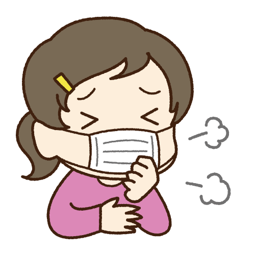

Physical Distancing
Jaga jarak ini bukan hanya berlaku di tempat umum, tetapi juga berlaku di seluruh rumah tangga di setiap keluarga.

Sports
Olahraga teratur menjadi cara untuk menjaga kesehatan, kebugaran, dan daya tahan tubuh di tengah pandemi corona

Gunakanlah Masker
WHO mengubah kebijakan dan mendorong semua orang untuk menggunakan masker di tempat umum terkait pandemi Covid-19